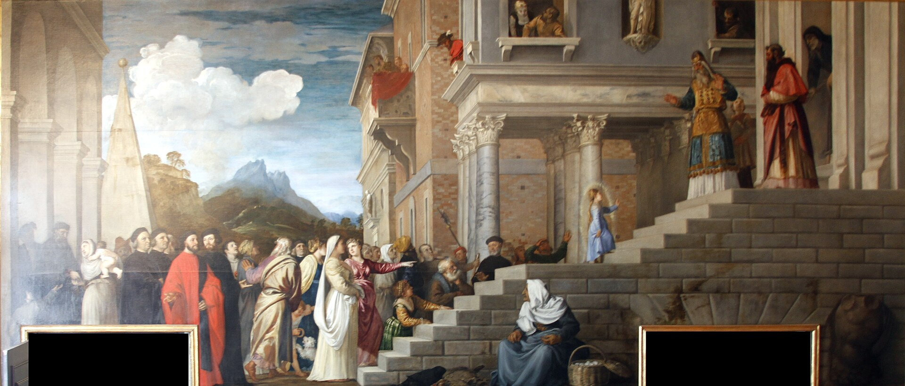
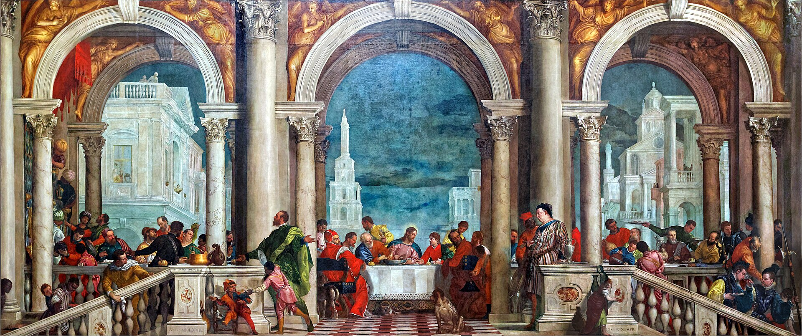
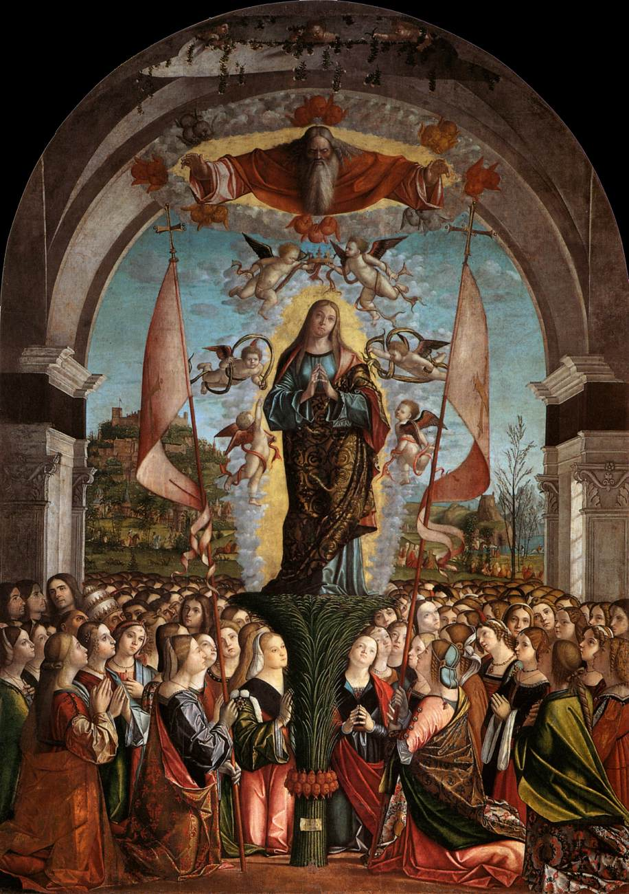
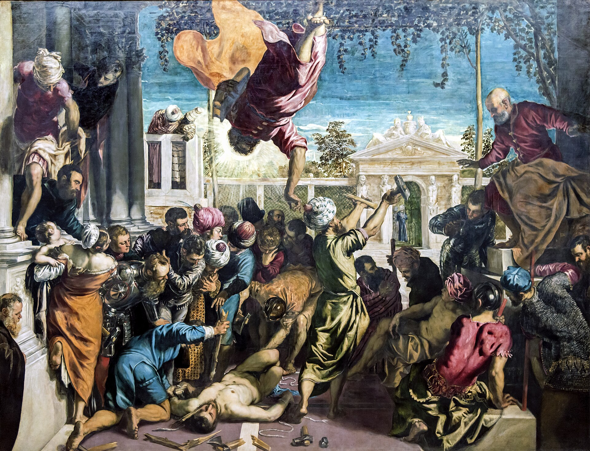
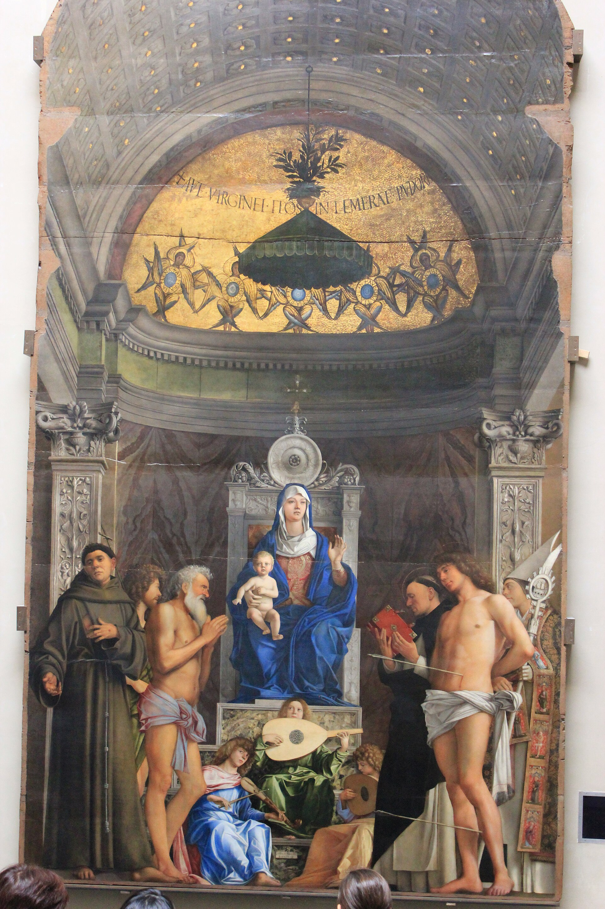
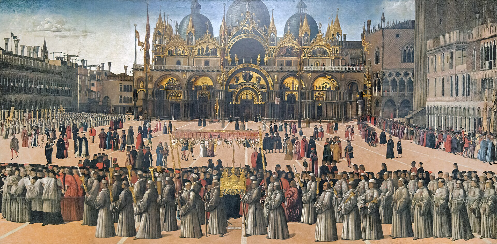
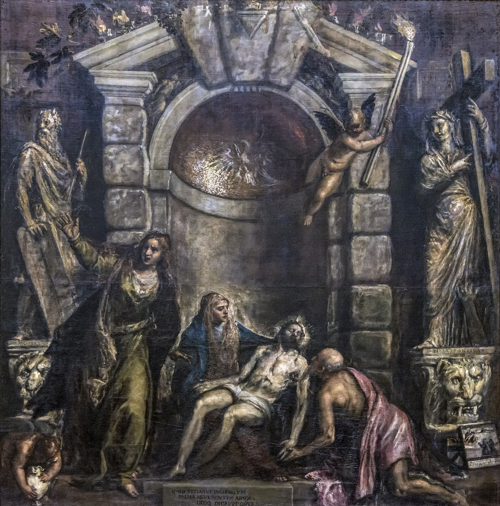
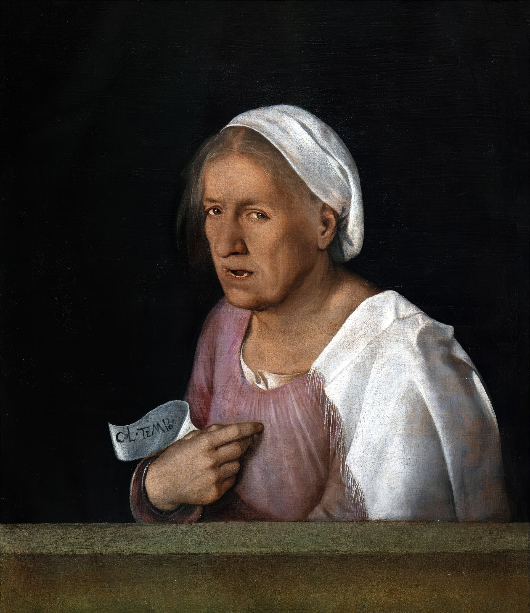

1807 年拿破仑时代设立的美术学院馆藏，收藏威尼斯画派从 14 到 18 世纪的完整谱系：贝利尼、乔尔乔内、提香、委罗内塞、丁托列托、卡帕奇奥--世界上唯一能在一栋楼里看完“威尼斯色彩”如何诞生的地方。
看点路线
Il Percorso
- 111 室《暴风雨》：五百年未解的谜题
- 221-23 室：委罗内塞《利未家的宴会》与丁托列托群
- 324 室：提香晚期《圣殇》--晚年笔触的“印象派”预言
- 4卡帕奇奥《圣乌苏拉传奇》九联画：15 世纪威尼斯的“纪录片”
馆藏名作
Gallerie dell'Accademia
绘画Pittura · 12 件

《暴风雨》
断桥、闪电、持戟士兵与哺乳的女子--五百年没人能确定它画的是什么。西方第一幅“氛围大于情节”的画，艺术史称它“第一幅现代绘画”。

《圣母进殿》
幼年马利亚走上圣殿的 15 级台阶，台阶下的威尼斯名流精确到可以认脸。宗教故事搬进威尼斯街头，画成了当时的“城市时尚大片”。

《利未家的宴会》
原名《最后的晚餐》--因画了小丑与酒鬼被宗教裁判所传讯，委罗内塞的应对是：不改画，只改标题。一场审判立下了艺术自由的早期判例。

《圣乌苏拉传奇》九联画
九幅巨布讲英国公主的朝圣与殉道，真正的主角是背景：15 世纪威尼斯的广场、船只与各族商人。超现实主义者把卡帕奇奥奉为先知。

《圣马可的奇迹》
圣马可凌空飞降解救受难的奴隶--26 岁的丁托列托用一道对角线闪电震惊威尼斯。透视灭点在人眼的高度，奇迹发生在“你的街道上”。

《圣约伯祭坛画》
圣母子与天使在圆拱下奏乐：威尼斯“圣对话”画作的定型之作--光、金与静，贝利尼教会整个威尼斯画派呼吸。

《圣马可广场的游行》
广场游行队伍的“高清纪录片”：巴西利卡立面、旗幡、贵族与市民，连修补中的屋顶都如实记录。1496 年的威尼斯街拍。

《圣殇》
80 多岁的提香为自己墓所作：颜料用手指抹开，笔触松到几乎解体。在 1576 年大瘟疫中他与儿子相继去世--晚期风格被四百年后的印象派认作先知。

《老妇》
皱纹里的凝视：“岁月”（Col Tempo）--文艺复兴第一次把“衰老的脸”画成主角。美被重新定义的那一天。

《圣乔治》
年轻的曼特尼亚在帕多瓦画下的屠龙骑士：岩石风景与考古式的古代装束--北方人文主义的精确，遇上威尼斯的前夜。
《大使们》
圣乌苏拉故事的另一幕：两位使者在拱门下相会，衣物织物质感纤毫毕现--卡帕奇奥的“面料摄影”至今无人超越。
十五世纪威尼斯祭坛画群
威尼斯画派的“史前史”：从晚期哥特金底到贝利尼的圣对话--一整层展厅看完一种绘画语言如何长成。
历史故事
Le Storie
壹《暴风雨》：一道 500 年的阅读理解
1530 年一位威尼斯贵族的财产清单里，这幅画被登记为“画着暴风雨、吉普赛女人与士兵的小布景”--这是它最早的解读。之后五百年，学者们提出过：亚当夏娃被逐、圣家庭逃亡埃及、帕里斯与海伦……没有一个理论能压倒其他。
技术检测让谜题更深：士兵的位置原来画的是一位沐浴的女子（后来被覆盖）。学界逐渐接受一个结论：乔尔乔内或许根本没打算讲一个“故事”。
"无叙事的绘画”在 1508 年是超前的：风景作为主体、人退为道具。1937 年英国批评家把它称为“第一幅现代绘画”。
贰委罗内塞的审判
1573 年 7 月，宗教裁判所传唤委罗内塞：你画的《最后的晚餐》里，为什么有德国卫兵喝酒、侏儒逗鹦鹉、小人流鼻血？
委罗内塞的回答载入了艺术史庭审记录："我们画家和诗人一样有同等的自由。"法官坚持要他修改，他的“修改”是把标题改成《利未家的宴会》--画中内容一字未动。
案子就此了结。这大概是审查制度史上最优雅的一次反杀：用标题的漏洞保住了画布的完整。
叁卡帕奇奥：文艺复兴的“纪录片导演”
卡帕奇奥的《圣乌苏拉传奇》九联画（1490-1500）表面讲圣女传记，实际是 15 世纪威尼斯的高清街拍：广场、船只、服饰与各族商人都被如实记录。
他是最早把“环境细节”置于叙事之上的画家之一--超现实主义画家布勒东奉他为先知，称他的画是“梦境的白日版”。
看《大使们》一幕里的织物与拱门：那种面料的质感，五百年无人超越--美术史学生来此临摹的第一课。
肆真蒂莱·贝利尼与“父亲的广场”
真蒂莱·贝利尼的《圣马可广场的游行》（1496）是圣马可巴西利卡立面最古老的形象记录--连当时修补中的屋顶都如实画出。
他画此画时，如今看到的马赛克立面才完工几十年--这幅画因此成了“立面的出厂照片”，建筑史家用它核对每一次后世修补。
对照今天广场实景看：建筑几乎没变，变的是人群--1496 年的游行队伍与 2026 年的游客，站在同一块地砖上。
伍提香的最后一幅画
《圣殇》（1575-1576）是 80 多岁的提香为自己墓所作：颜料用手指抹开，笔触松到几乎解体--学院派曾嫌它“未完成”，四百年后印象派认作先知。
1576 年大瘟疫带走他与儿子（也是画家）。传说他死在画前--后世把这对父子的结局浪漫化为“画家的殉职”。
这幅画原为 Frari 教堂的家族墓而作，后经辗转进入学院美术馆--它至今保持着“不可出借”的身份：这是威尼斯画派的心脏，不外借。
陆乔尔乔内的《老妇》与“岁月”
画中老妇手持纸条，写着“岁月”（col tempo）--文艺复兴第一次把“衰老的脸”作为主角。
她的皱纹、松弛的皮肤与清澈的眼神被同等精度刻画：既不美化也不猎奇。在一个人像必须“理想化”的时代，这是一次伦理上的越界。
它与《暴风雨》同厅--乔尔乔内存世作品仅数件，这个小厅是艺术史密度最高的房间之一。
柒《圣母进殿》里的“名流签名”
提香《圣母进殿》（1534-1538）的台阶下站着一排威尼斯名流--包括皮萨尼家族与当时的艺术赞助人，画成了 16 世纪的“城市合影”。
找一找台阶右侧卖鸡蛋的老妇人与乞丐：神圣叙事与市井生活同框，是威尼斯画派的招牌--神的事发生在街上。
此画原为慈善机构 Scuola della Carità（今美术馆本体）而作--它从没离开过这栋楼：一幅在原地站了五百年的画。
捌学院的“拿破仑出身”
学院美术馆的馆舍原是慈善机构与修道院（Scuola della Carità + Santa Maria church + convent），1807 年拿破仑时代改组为美术学院与画廊。
最初的使命是“集中保存共和国终结后无主的宗教绘画”--与米兰布雷拉的起源如出一辙：拿破仑是意大利美术馆体系的“意外总规划师”。
2013-2021? 年的扩馆把整栋建筑群打通--今天的动线本身就是一次“建筑考古”：从中世纪大厅走到 19 世纪展厅，脚下的地板换了四个朝代。
玖圣马可的奇迹与“透视的怒吼”
丁托列托 26 岁的《圣马可的奇迹》（1548）：圣马可凌空飞分解救受难的奴隶，一道对角线闪电劈开画面。
当时的委托方（圣马可大会堂）看到后一度想拒收--太猛了。但它最终让丁托列托一战成名：他一生签在墙上的格言是“提香的色彩+米开朗基罗的形体”。
看奴隶的透视灭点：在人眼高度。奇迹发生在“你的街道上”--这是威尼斯画派把神迹平民化的经典操作。
拾学院桥与“美术馆的门槛”
美术馆门外的学院桥（Ponte dell'Accademia）是全木结构的大运河桥（1933 年临时桥的“转正”故事本身就是威尼斯式幽默：原计划改建石桥，二战爆发，木桥撑到了今天）。
桥上是拍大运河与圣母安康圣殿同框的第一机位--多数人拍了就走，错过了桥那头的五百年绘画史。
正确顺序：先看画（人少的上午）、再上桥（黄昏的光）--让威尼斯的两种“金色”（马赛克的与夕阳的）在同一天到账。
参观贴士
Consigli Pratici
- 周一仅上午开放--反倒是避开人流的好时段（票也更好买）
- 路线按画派时间轴：二层早期（贝利尼/卡帕奇奥）-> 一层盛期（提香/委罗内塞/丁托列托）
- 《暴风雨》在 11 室人最多，开馆首小时去看最从容
- 馆内可拍照禁闪光；卡帕奇奥九联画值得逐幅看背景细节（带长焦或望远镜更佳）
- 与佩姬·古根海姆隔大运河南岸相望，出馆步行 8 分钟可连看（一古一今，是威尼斯艺术日的绝配）
- 学院桥（木桥）本身是拍照点：桥上拍大运河与圣母安康圣殿
顺路同游
Da Non Perdere